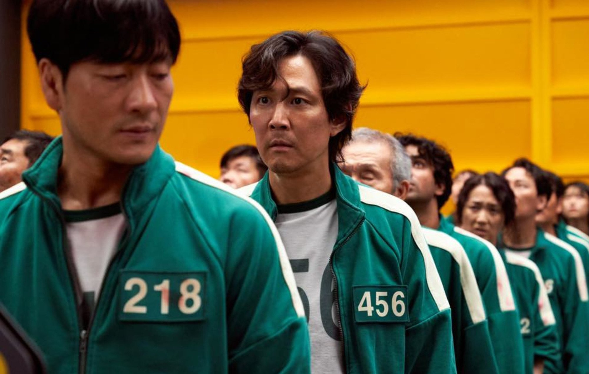
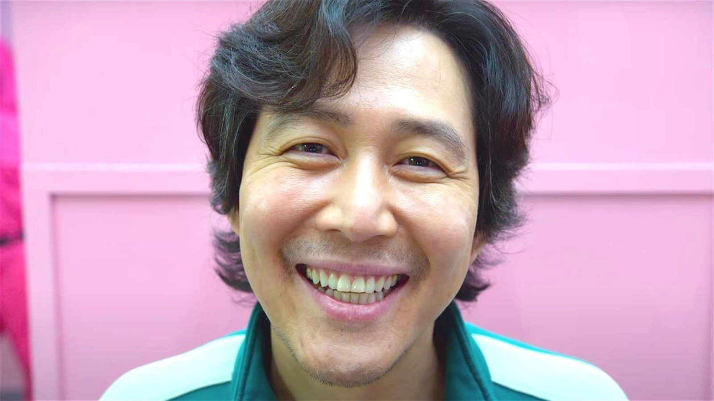
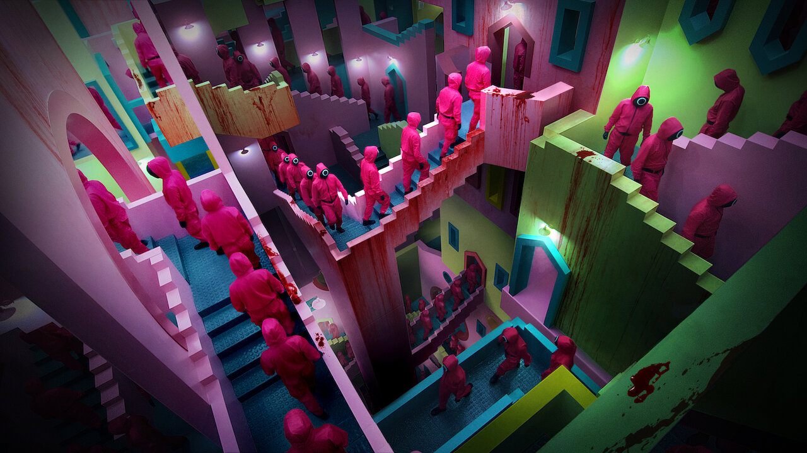
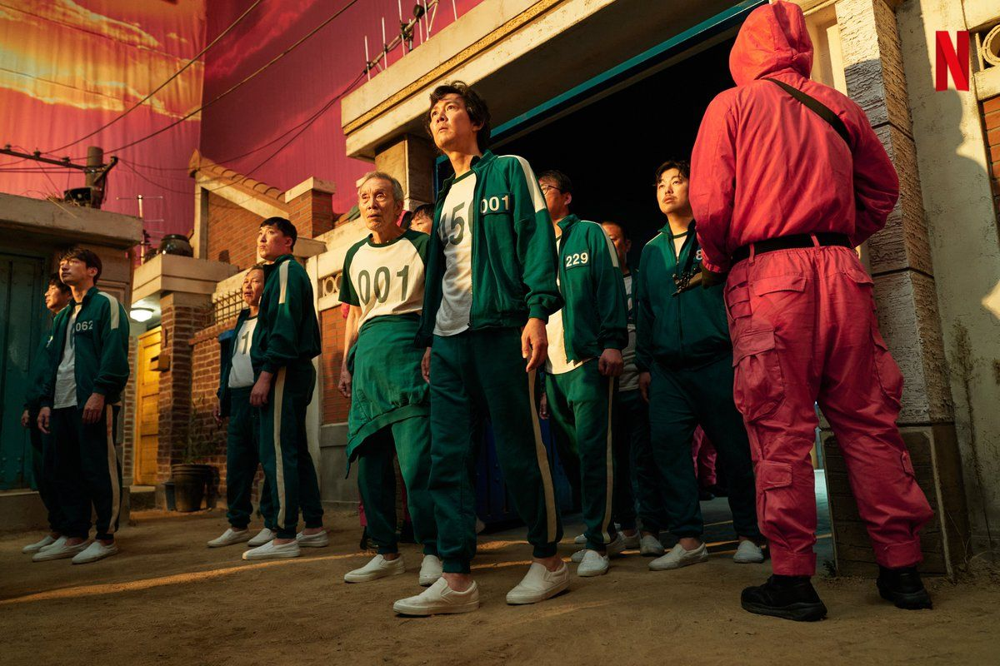
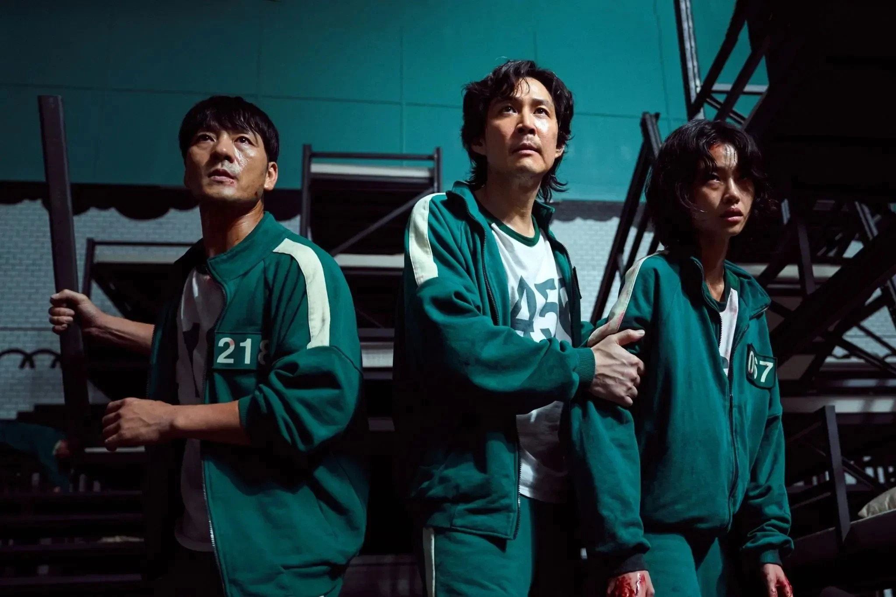
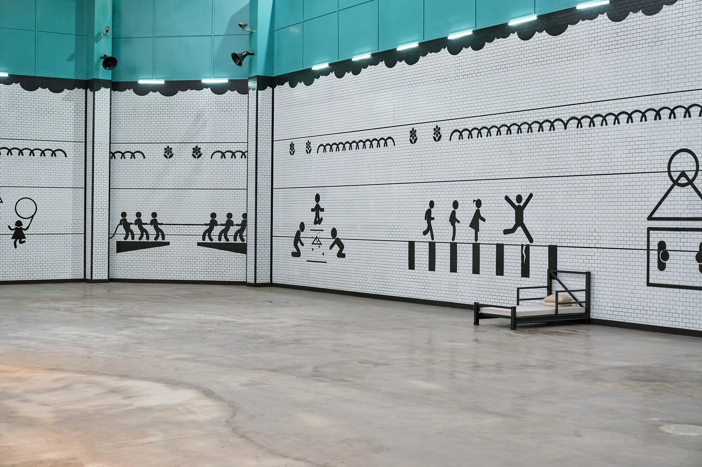
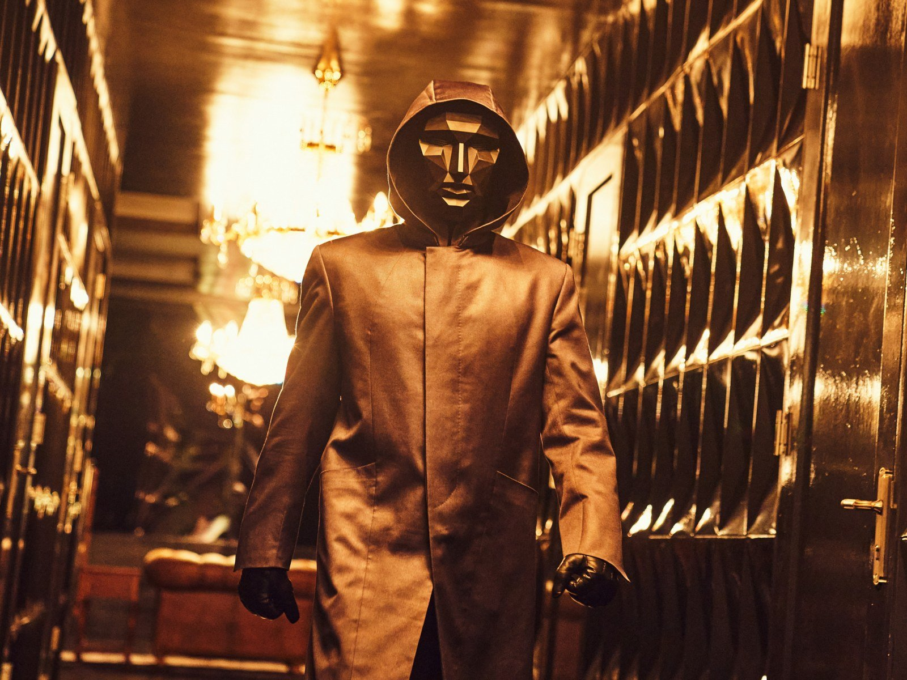

Review phim Squid Game – Trò chơi con mực Cực Kỳ Hấp Dẫn
1. Giới thiệu phim Squid Game
Thông tin phim
Thể loại: Giật gân, kinh dị, tâm lý, chiến đấu sinh tồn Đạo diễn: Hwang Dong-hyuk Diễn viên: Lee Jung Jae, Park Hae Soo, Wi Ha Joon, HoYeon Jung Quốc gia: Hàn Quốc Ngày khởi chiếu: 17/9/2021 Thời lượng: 9 tập
Nội dung phim
Squid Game – Trò chơi con mực mất 10 năm để lên kế hoạch và thu hút sự chú ý của khán giả theo cách “đặc biệt” mà không ai ngờ tới. Đạo diễn Hwang Dong-Hyuk đã khá liều lĩnh khi lựa chọn chủ đề khắc họa khả năng sinh tồn của con người.

Nội dung Squid Game xoay quanh những trò chơi tử thần dựa theo trò chơi quen thuộc của trẻ em Hàn Quốc ngày xưa, được tổ chức tại địa điểm bí mật bởi một tổ chức bí ẩn ở Hàn Quốc gồm 456 người tham gia, là những người đang chìm trong nợ nần, gặp khó khăn trong tài chính. Người chiến thắng vượt qua 6 vòng chơi sẽ nhận được phần thưởng 45.6 tỷ won. Đổi lại kẻ thua cuộc sẽ phải trả giá bằng chính mạng sống của mình.
2. Review phim Squid Game – Trò chơi con mực
Lưu ý: Phần Review phim Squid Game – Trò chơi con mực dưới đây sẽ tiết lộ một phần nội dung của phim.
Nội dung chính Squid Game – Trò chơi con mực
Mạch phim bắt đầu Squid Game – Trò chơi con mực bắt nguồn từ Seong Gi-hun (Lee Jung-jae đóng) nghiện cờ bạc và chìm ngập trong nợ nần. Anh “khát tiền” đến mức không ngần ngại chấp nhận lời đề nghị của một kẻ bí ẩn hứa hẹn về cuộc chơi với phần thưởng đủ để đổi đời.
Sau khi nhận lời, Seong Gi-hun được đưa đến địa điểm bí mật cùng 455 người khác. 456 người này đều đang gặp khó khăn về mặt tài chính và cùng tham gia trò chơi sinh tồn.
Nguồn gốc của trò chơi con mực
Series game trong Squid Game dựa theo trò chơi quen thuộc của trẻ em Hàn Quốc ngày xưa nhưng có sự biến tấu chết người. Sở dĩ nó được gọi là con mực (Squid) vì sân chơi được vẽ giống hình con mực ống. Thể lệ luật chơi Squid Game khá đơn giản, được chia làm 2 phe gồm phe phòng thủ và phe tấn công.
Phe tấn công chỉ giành chiến thắng khi họ vượt qua hàng phỏng thủ và đi vào vòng tròn tương ứng đầu con mực. Ngược lại phe phòng thủ giành chiến thắng khi họ ngăn chặn được tấn công và không phạm luật.
Series phim sinh tồn mới lạ và giật gân
Squid Game – Trò chơi con mực thuộc thể loại sinh tồn, giật gân và mới lạ. Trong đó gồm 456 người tham gia và chỉ duy nhất một người sống sót còn lại sẽ giành chiến thắng và nhận được số tiền thưởng trị giá 45,6 tỷ won.
Phim lôi cuốn và thu hút người xem bởi những tình tiết giật gân
Nguồn gốc của trò chơi con mực
Đạo diễn Squid Game- Trò chơi con mực, Hwang Dong-hyuk, đã dành hơn 10 năm để lên kế hoạch cho bộ phim. Ông nổi tiếng với những bộ phim đạt nhiều giải thưởng như Silenced, Miss Granny và The Fortress và tạo ấn tượng tốt trong lòng khán giả cho từng bộ phim với bất cứ thể loại nào. Minh chứng rõ nhất là Squid Game- Trò chơi con mực hiện đang là bộ phim ăn khách nhất hiện nay.
Ngoài nội dung kịch tính, series phim sinh tồn mới lạ, đạo diễn tài năng, diễn xuất ấn tượng của dàn diễn viên cũng là yếu tố then chốt tạo nên thành công cho bộ phim. Squid Game quy tụ dàn diễn viên chất lượng như Lee Jung Jae, Park Hae Soo, Wi Ha Joon, … .
Phản ánh góc tối trong xã hội
Sức hấp dẫn của Squid Game không chỉ dừng lại ở những phân đoạn đánh đấm rợn người mà đi sâu vào diễn biến tâm lý của các đối thủ. Ở đó nhóm người tham gia trò chơi được xem như xã hội thu nhỏ với đủ các thành phần. Khi đứng trước cái chết và món lợi, mỗi người sẽ bộc lộ bản chất khác nhau của mình.
Bộ phim Squid Game với những tình tiết hấp dẫn đang thu hút rất nhiều người xem hiện nay.
Bài học sâu xa đằng sau Squid Game- Trò chơi con mực
Nhìn bề ngoài cốt truyện Squid Game khá dễ hiểu. Đơn giản chỉ là trò chơi sinh tồn, người chiến thắng sẽ giành được số tiền thưởng, ngược lại kẻ thua cuộc sẽ phải trả giá bằng chính mạng sống của mình. Thế nhưng xét về mặt ý nghĩa sâu xa, mục đích của tổ chức bí mật kia là tạo ra một thế giới trò chơi công bằng, không đầy rẫy những lọc lừa, dối trá như xã hội.
Nhìn thì có vẻ những trò chơi này rất đơn giản nhưng chứa đựng đằng sau đấy là những bài học ý nghĩa rất sâu sắc
Plot Twist bất ngờ
Phần hay nhất của Squid Game là cốt truyện kịch tính, đan xen những tình tiết phim khiến khán giả cảm thấy bất ngờ cũng như mở ra nhiều cánh cho các phần tiếp theo.
Phần Review phim Squid Game – Trò chơi con mực của chúng tôi đến đây là coi như tạm kết, phần còn lại bạn đọc hãy xem phim và trải nghiệm nhé. Squid Game hiện đang chiếu trên Netflix, đừng quên xem phim và chia sẻ ý kiến, đánh giá về bom tấn sinh tồn này cho chúng tôi nhé! Chúc các bạn có những phút giây xem phim thư giãn và vui vẻ.